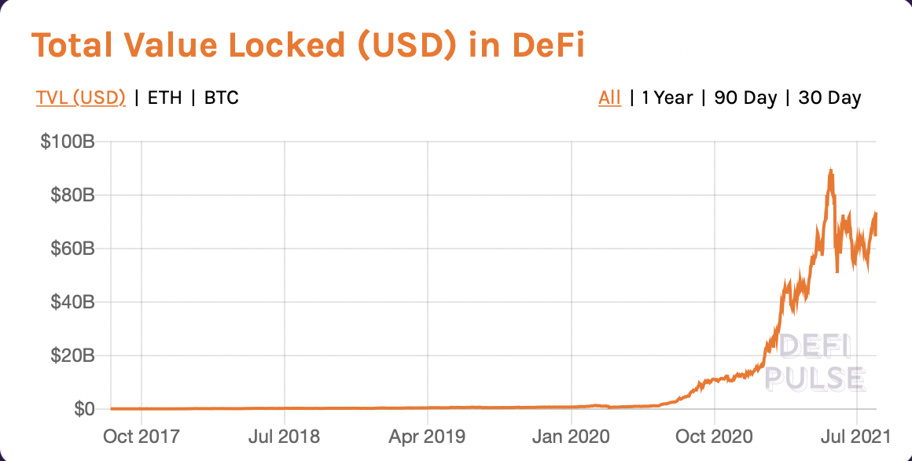

DeFi

Decentralised finance
DeFi is short for “decentralized finance,” a term for a variety of financial applications in cryptocurrency or blockchain geared toward disrupting financial go-betweens (banks, etc).Based on smart contracts, decentralized finance is focused on successfully replacing current financial institutions. This is beyond investing and growing your money like a calculated gamble on shitcoins. This is even beyond believing in the technology. These are confirmed and guaranteed agreements that give you a proper financial service like loans and interests and many more.
Entire banks and other financial institutes built on blockchain and cryptocurrencies are serving you as an individual and letting you control most of the system.
Defi is something very promising and one of the biggest innovations on the blockchain with around 60 Billion dollars worth of wealth stored in it and it’s not been a year since its launch.
Right now some cool applications on defi include yeild farms and over collateralized lending (locking in more amount as saftey than giving loan).
At its core, yield farming is a process that allows cryptocurrency holders
to earn rewards on their holdings. With yield farming, an investor deposits units of a cryptocurrency into a lending protocol to earn interest from trading fees. Some users are also rewarded with additional yields from the
protocol’s governance token.
Yield farming works in a similar way to bank loans. When the bank loans you money, you pay back the loan with interest. Yield farming does the same, but this time, the banks are crypto holders like yourself. Yield farming
uses “idle cryptos” that would have otherwise been wasting away in an exchange or hot wallet to provide liquidity in DeFi protocols like Uniswap in exchange for returns.
crypto lending is a relativly new venture. People can borry money by just having a wallet with more money they need and nothing else. Reducing the collateral is the new step this market is taking with bunch of new blockchain
protocols coming in.